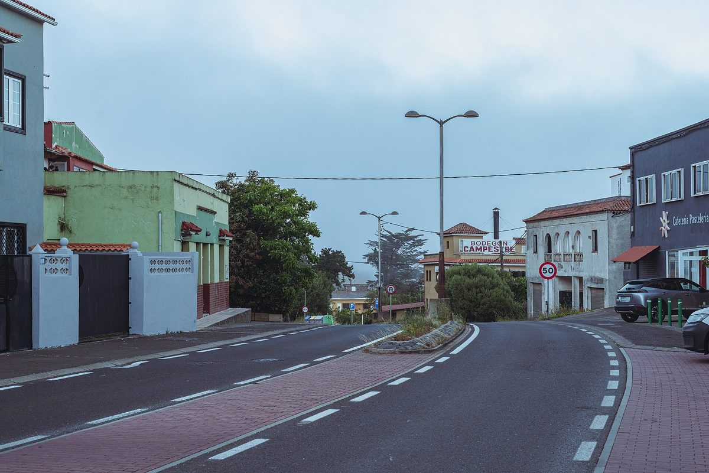

테네리페 엘로사리오 지역 에너지공동체 회원 200명…공업단지 지붕 2MW 등 태양광 5MW 추진

시가 만든 엘로사리오 솔라, 카나리아 지자체연합 상 받고 브뤼셀 유럽 지역·도시 주간서 에너지 빈곤 대응 사례로 발표…EU 회복기금 600만 유로 넘게 지원
스페인 카나리아제도 테네리페섬의 엘로사리오(El Rosario) 시가 만든 지역 에너지공동체 '엘로사리오 솔라(El Rosario Solar)'가 회원 200명을 모으고 모두 5MW 규모의 태양광 발전소 3곳을 추진하고 있다. 첫 발전소인 라 캄파나 공업단지 지붕 설비는 2MW에 배터리 1MWh를 갖출 계획이며, 해안 지역 2MW와 라 에스페란사 1MW가 뒤를 잇는다. 라 캄파나 설비의 전기는 반경 약 2km 안의 회원이 나눠 받는 구조이고, 회원은 기업과 주민으로 이뤄져 있으며 시의 생태전환 담당 의원이 공동체 회장을 맡고 있다. 사업에는 카나리아 자치정부를 거친 EU 회복기금(NextGenerationEU) 600만 유로 넘게 들어가고 시는 회원에게 10년간 재산세(IBI)를 주택 50%, 상공업체 25% 깎아 주는데, 시는 집마다 설비를 따로 다는 것보다 참여 비용이 절반 넘게 줄어든다고 설명했다. 이 공동체는 카나리아 지자체연합(FECAM)의 2026년 상(국토·지속가능성·기반시설 부문)을 받았고, 10월 브뤼셀 '유럽 지역·도시 주간'에서는 지방정부의 에너지 빈곤 대응 사례로 발표됐으며, 에스콜라스티코 힐 시장은 우리 시에서 시작한 사업이 유럽 무대의 본보기가 돼 자랑스럽다고 말했다.
시민에너지 관점
엘로사리오는 지붕에 패널을 달 수 없는 집도 반경 2km 안 공업단지 지붕 발전소의 전기를 나눠 받게 해, 태양광을 지붕 있는 사람만의 혜택에서 동네 전체의 몫으로 넓히고 있다. 보조금에 기댄 사업은 오래가지 못한다는 우려가 있지만, 첫 설비에 공공 자금을 넣고 재산세 감면으로 참여 문턱을 낮추면 회원의 전기 비용이 줄고 그 절감분은 지역 안에 남는다. 다만 시 의원이 회장을 맡는 구조에서 주민이 지분과 의결권을 얼마나 갖느냐가 공동체의 앞날을 가를 것으로 보인다. 국내에서도 산업단지 지붕을 주변 주민과 상공인이 함께 소유하는 공동체 발전소로 묶고, 지자체가 세제와 부지로 뒷받침하는 제도부터 만들어야 한다.
출처: 플라네타 카나리오(Planeta Canario) 2026-10-23 기자 미표기 원문 보기
テネリフェ島エル・ロサリオの地域エネルギー共同体、会員200人…工業団地の屋根2MWなど太陽光5MWを計画
市が設立したエル・ロサリオ・ソラール、カナリア自治体連合の賞を受けブリュッセルの欧州地域・都市週間でエネルギー貧困対策の事例として発表…EU復興基金600万ユーロ超を投入
スペイン・カナリア諸島テネリフェ島のエル・ロサリオ（El Rosario）市が設立した地域エネルギー共同体「エル・ロサリオ・ソラール（El Rosario Solar）」が会員200人を集め、合計5MWの太陽光発電所3カ所の整備を進めている。最初の発電所となるラ・カンパナ工業団地の屋根の設備は2MWで、1MWhの蓄電池を備える計画で、沿岸部の2MWとラ・エスペランサの1MWがこれに続く。ラ・カンパナの設備の電気は半径約2km以内の会員に分配される仕組みで、会員は企業と住民から成り、市のエコロジー転換担当議員が共同体の会長を務めている。事業にはカナリア自治州政府を通じたEU復興基金（NextGenerationEU）から600万ユーロ超が充てられ、市は会員の固定資産税（IBI）を10年間、住宅で50％、商工業者で25％減免しており、市は各家庭が個別に設備を付けるより参加費用が半分以上安くなると説明している。共同体はカナリア自治体連合（FECAM）の2026年賞（国土・持続可能性・インフラ部門）を受け、10月にブリュッセルで開かれた「欧州地域・都市週間」では地方政府によるエネルギー貧困対策の事例として発表され、エスコラスティコ・ヒル市長は、市で生まれた事業が欧州の舞台で手本となったことを誇りに思うと語った。
市民エネルギーの視点
エル・ロサリオは、屋根にパネルを載せられない家でも半径2km以内の工業団地の屋根発電所から電気を分けてもらえるようにし、太陽光を屋根を持つ人だけの恩恵から地域全体の取り分へと広げようとしている。補助金頼みの事業は長続きしないとの懸念もあるが、最初の設備に公的資金を入れ、固定資産税の減免で参加の敷居を下げれば、会員の電気代が下がり、その節約分は地域の中にとどまる。ただ、市議会議員が会長を務める仕組みのもとで住民がどれだけ持ち分と議決権を持てるかが、共同体の行方を左右するとみられる。韓国でも、産業団地の屋根を周辺の住民や商工業者が共同で所有する共同体発電所として束ね、自治体が税制と用地で後押しする制度をまずつくるべきだ。
出典: プラネタ・カナリオ（Planeta Canario） 2026-10-23 記者名なし 原文を読む
特内里费岛El Rosario地方能源社区会员达200名…推进工业区屋顶2MW等共5MW光伏
市政府创建的El Rosario Solar获加那利市镇联合会奖项，并在布鲁塞尔欧洲地区与城市周作为应对能源贫困的案例发表…欧盟复苏基金投入逾600万欧元
西班牙加那利群岛特内里费岛El Rosario市创建的地方能源社区“El Rosario Solar”已吸纳200名会员，正在推进总规模5MW的3座光伏电站。第一座电站设在La Campana工业区屋顶，计划装机2MW并配备1MWh电池，沿海地区的2MW和La Esperanza的1MW随后跟进。La Campana电站的电力由半径约2公里内的会员分享，会员由企业和居民组成，社区主席由该市负责生态转型的市议员担任。项目获得经加那利自治区政府拨付的欧盟复苏基金（NextGenerationEU）逾600万欧元，市政府还在10年内为会员减免房产税（IBI），住宅减50%、工商业减25%；市方表示，与每户单独安装设备相比，参与成本可降低一半以上。该社区获得加那利市镇联合会（FECAM）2026年奖项（国土、可持续发展与基础设施类），并在10月于布鲁塞尔举行的“欧洲地区与城市周”上作为地方政府应对能源贫困的案例发表，市长Escolástico Gil表示，本市诞生的项目成为欧洲舞台上的榜样，令人自豪。
市民能源视角
El Rosario让无法在自家屋顶装板的家庭也能分享半径2公里内工业区屋顶电站的电力，把光伏从有屋顶者独享的好处扩展为整个社区的份额。有人担心依赖补贴的项目难以长久，但在首批设施投入公共资金、以房产税减免降低参与门槛，会员的电费就会下降，省下的钱也留在本地。不过，在由市议员担任主席的结构下，居民能拥有多少股份和表决权，看来将决定这个社区的前途。韩国也应首先建立制度，把产业园区屋顶整合为由周边居民和工商业者共同拥有的社区电站，由地方政府以税制和用地加以支持。
来源: Planeta Canario 2026-10-23 未署名 查看原文
El Rosario energy community in Tenerife reaches 200 members and pursues 5MW of solar, including 2MW on industrial estate roofs
Council-founded El Rosario Solar wins Canary Islands municipalities federation award and is presented in Brussels as an energy poverty case at the European Week of Regions and Cities; more than 6 million euros in EU recovery funds
El Rosario Solar, a local energy community set up by the municipality of El Rosario on the Canary Island of Tenerife, has gathered 200 members and is pursuing three solar plants with a combined 5MW. The first, on the roofs of the La Campana industrial estate, is planned at 2MW with 1MWh of battery storage, to be followed by 2MW in the coastal area and 1MW in La Esperanza. Power from the La Campana installation is shared among members within a radius of about 2km; the members are businesses and residents, and the council's ecological transition councillor chairs the community. The project has more than 6 million euros from the EU's NextGenerationEU recovery funds channelled through the Canary Islands government, and the council grants members a 10-year property tax (IBI) rebate of 50% for homes and 25% for industrial and commercial premises, saying the cost of joining is more than halved compared with fitting a system on a single house. The community won the 2026 award of the Canary Islands Federation of Municipalities (FECAM) in the territory, sustainability and infrastructure category and was presented in October at the European Week of Regions and Cities in Brussels as a local government response to energy poverty, and Mayor Escolástico Gil said he was proud that a project born in the town had become a model on a European stage.
Citizen Energy View
By letting households that cannot put panels on their own roofs share power from industrial estate roofs within 2km, El Rosario is turning solar from a perk for roof owners into a share for the whole neighbourhood. Some worry that subsidy-backed projects do not last, but putting public money into the first installations and lowering the entry threshold with tax rebates cuts members' electricity costs and keeps the savings in the area. How much ownership and voting power residents hold, in a structure chaired by a councillor, looks set to decide the community's future. Korea should likewise begin with rules that bundle industrial park roofs into community power plants jointly owned by nearby residents and small businesses, with local governments supporting them through tax measures and sites.
Source: Planeta Canario 2026-10-23 No byline Read the original